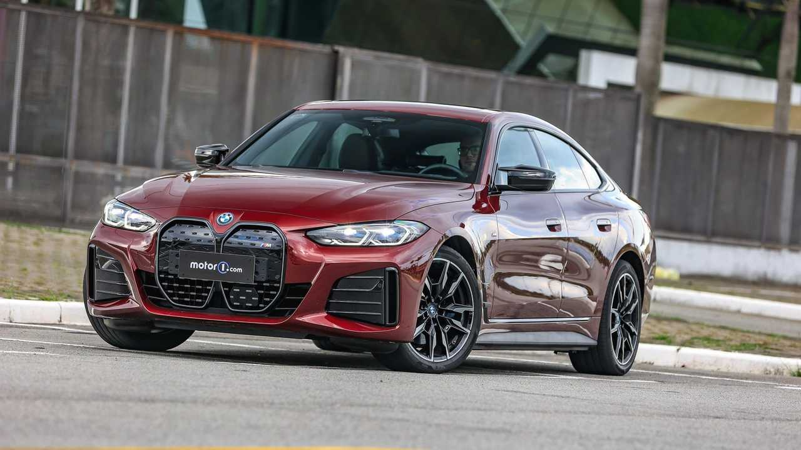

Nossa História
A BMW (Bayerische Motoren Werke) foi fundada em 1916 em Munique, Alemanha, inicialmente como fabricante de motores de aeronaves. Após a Primeira Guerra Mundial, a BMW passou a produzir motocicletas, e, em 1928, lançou seu primeiro automóvel. Ao longo de sua história, a BMW se consolidou como uma das maiores e mais renomadas fabricantes de carros de luxo e veículos de alta performance no mundo.

Com uma trajetória de mais de 100 anos, a BMW não é apenas um símbolo de inovação e tecnologia, mas também uma marca associada à performance, luxo e qualidade superior.
Nossa Visão
Mobilidade Sustentável e Inovação
A BMW acredita em um futuro sustentável, onde a mobilidade é reinventada para ser mais ecológica, eficiente e conectada. Nossa visão é ser a líder global em soluções de mobilidade premium, utilizando tecnologia avançada para tornar a experiência de dirigir mais segura, limpa e envolvente.
"A mobilidade do futuro será eletrificada, digitalizada e sustentável."
Inovação e Tecnologia
A BMW está na vanguarda da tecnologia automotiva, desenvolvendo soluções inovadoras que moldam o futuro da mobilidade. Desde a criação dos primeiros carros elétricos até a integração de inteligência artificial nos veículos, a BMW está sempre um passo à frente.
Carros Elétricos e Sustentabilidade
Com o lançamento da linha BMW i, a empresa reforçou seu compromisso com a sustentabilidade. Modelos como o BMW i4 e BMW iX combinam performance esportiva com emissão zero, oferecendo uma nova experiência de condução elétrica. A BMW também está desenvolvendo soluções de recarga mais rápidas e eficientes para facilitar a transição para um futuro elétrico.
Nossos Valores
Excelência, Responsabilidade e Inovação
Na BMW, acreditamos que a excelência é alcançada através de trabalho árduo, inovação constante e uma busca contínua pela perfeição. Valorizamos a sustentabilidade e nos comprometemos em reduzir nossa pegada ambiental enquanto proporcionamos aos nossos clientes a melhor experiência automotiva possível. Nossa equipe está sempre buscando novas formas de inovar e melhorar nossos processos, produtos e serviços.
Foco no Cliente
O cliente está no centro de tudo o que fazemos. Nos esforçamos para superar as expectativas de nossos clientes, proporcionando veículos que atendem tanto às suas necessidades práticas quanto aos seus desejos por luxo, estilo e performance.